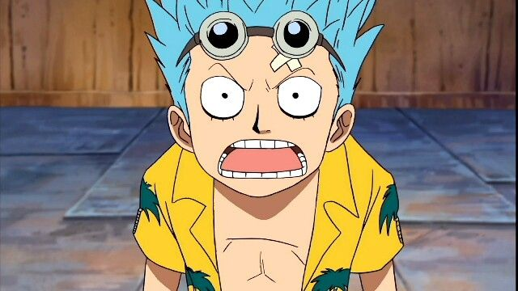
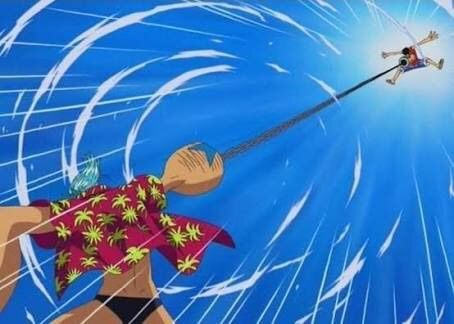
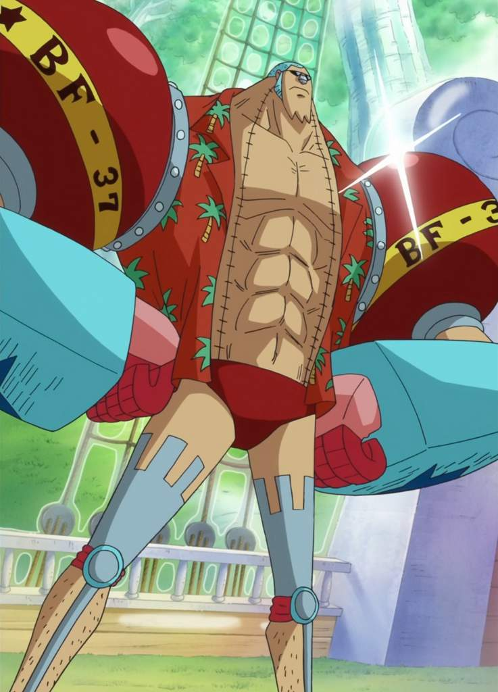
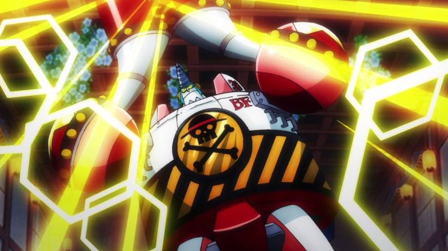

Etapas de franky en One Piecce
🔹 Fase 1 — Orígenes / Antes de unirse a los Sombrero de Paja

- Franky nació como Cutty Flam en South Blue. Fue abandonado por sus padres y rescatado por un carpintero llamado Tom en la ciudad de Water 7.
- Fue aprendiz de carpintería, y soñaba con construir barcos.
- Tras un incidente en que su cuerpo resultó gravemente dañado — intentando salvar los planos de un arma ancestral — decidió modificarse a sí mismo con partes mecánicas: se convierte en “cyborg”.
- Durante ese periodo también lidera un grupo de desmanteladores de barcos y cazarrecompensas: la llamada Franky Family. En ese momento, Franky no es aliado de los Sombrero de Paja, e incluso antagoniza con ellos.
🔹 Fase 2 — Arco Water 7 / Primer contacto con los Sombrero de Paja — De enemigo a aliado

- Su debut como antagonista ocurre en el arco de Water 7: inicialmente en conflicto con la tripulación de los Sombrero de Paja.
- Sin embargo, tras los eventos del arco, Franky decide dejar atrás su papel como enemigo. Ofrece construir un nuevo barco para los Sombrero de Paja: la icónica nave Thousand Sunny — cumpliendo su sueño de construir una embarcación capaz de dar la vuelta al mundo.
- Se une oficialmente a la tripulación como su carpintero/naval y miembro permanente.
🔹 Fase 3 — Post-Timeskip / Evolución como cyborg, mejoras y poder tecnológico

- Luego del salto temporal, Franky mejora su cuerpo y habilidades. Su condición de cyborg se fortalece con nuevas mejoras, armas y gadgets, haciendo de él un combatiente mucho más completo.
- Además de su rol como carpintero/naval, comienza a desempeñarse como un miembro de combate confiable en situaciones difíciles — sumando su ingenio, armamento, y su experiencia en construcción/tecnología.
- Su personalidad también se estabiliza: aunque sigue con su estilo extravagante y humorístico, gana mayor seguridad, determinación y responsabilidad hacia sus compañeros.
🔹 Fase 4 — Madurez, lealtad y rol clave en la tripulación — “El carpintero-ingeniero de los Sombrero de Paja”

- Franky ya no es solo “el tipo raro cyborg”: es uno de los pilares de la tripulación, responsable del barco, mantenimiento, construcciones, y participación en grandes batallas.
- Ha superado su pasado oscuro, abandonando la vida de delincuente, y adoptando un ideal propio: construir, proteger, soñar — con sus amigos como familia.
- Su evolución narrativa demuestra que incluso personajes con origen difícil pueden cambiar, redimirse y encontrar sentido a través de sus sueños, habilidades y vínculo con otros.